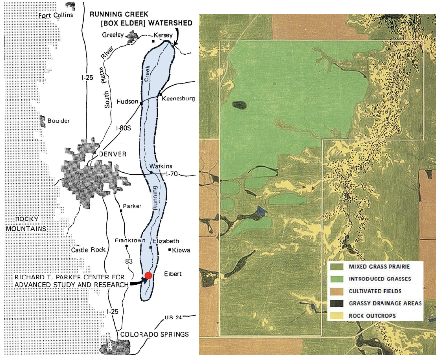
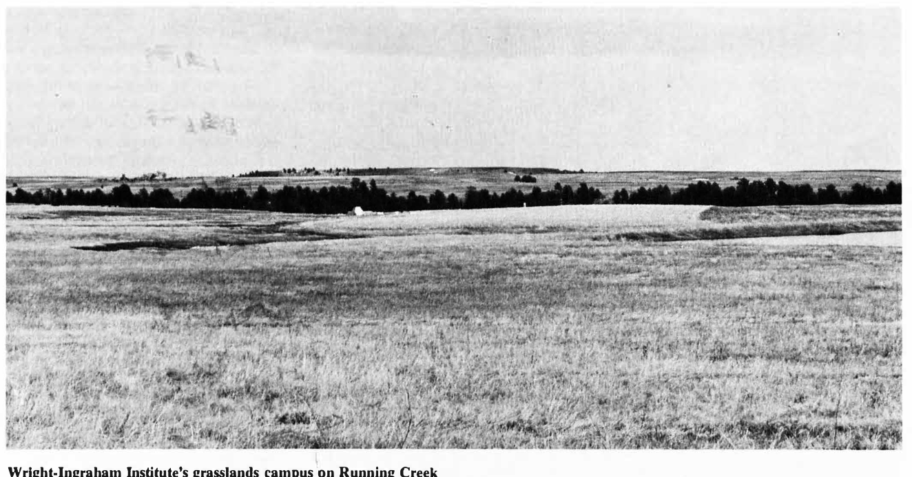
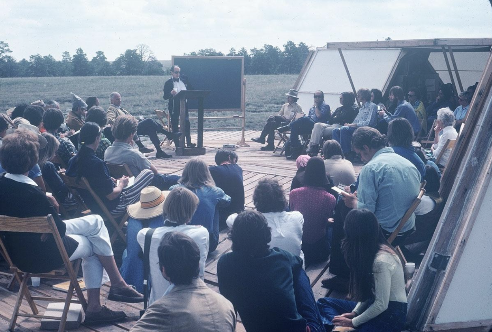
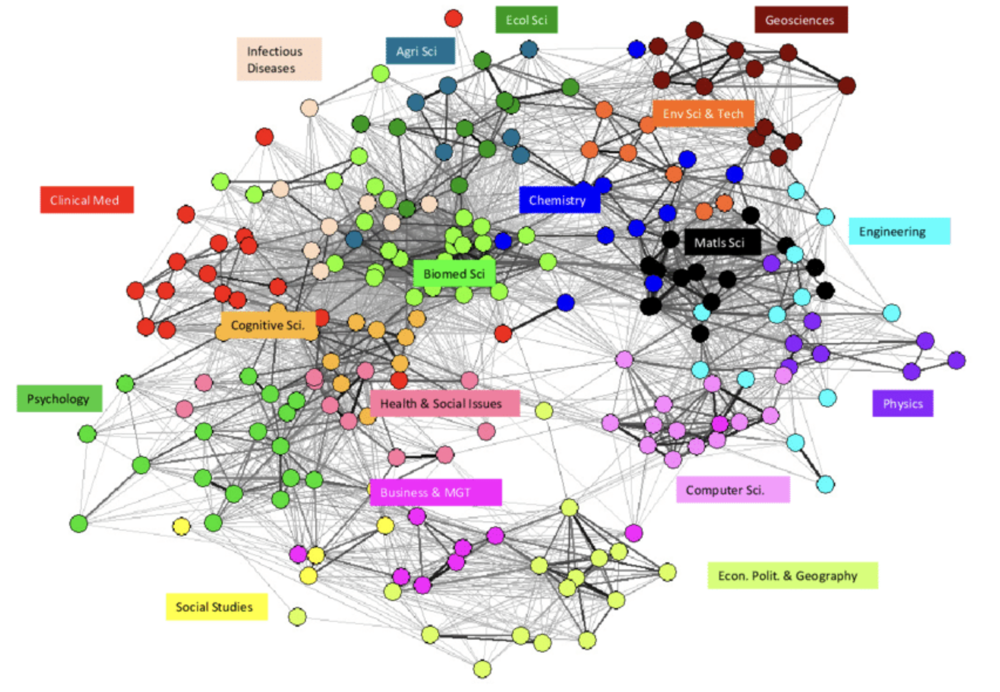
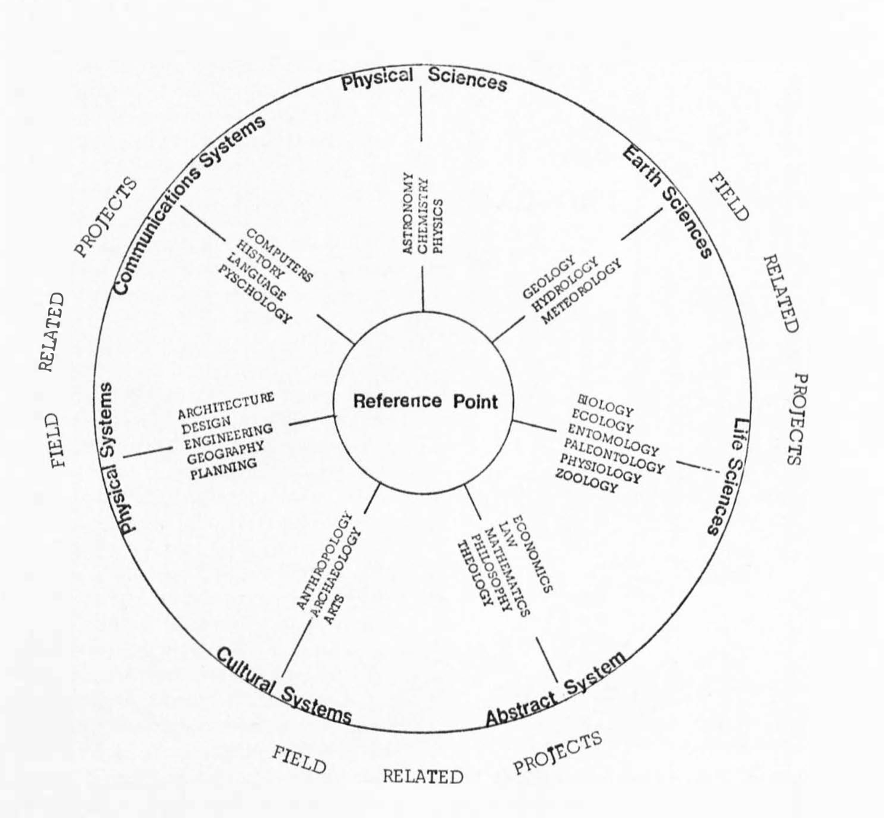
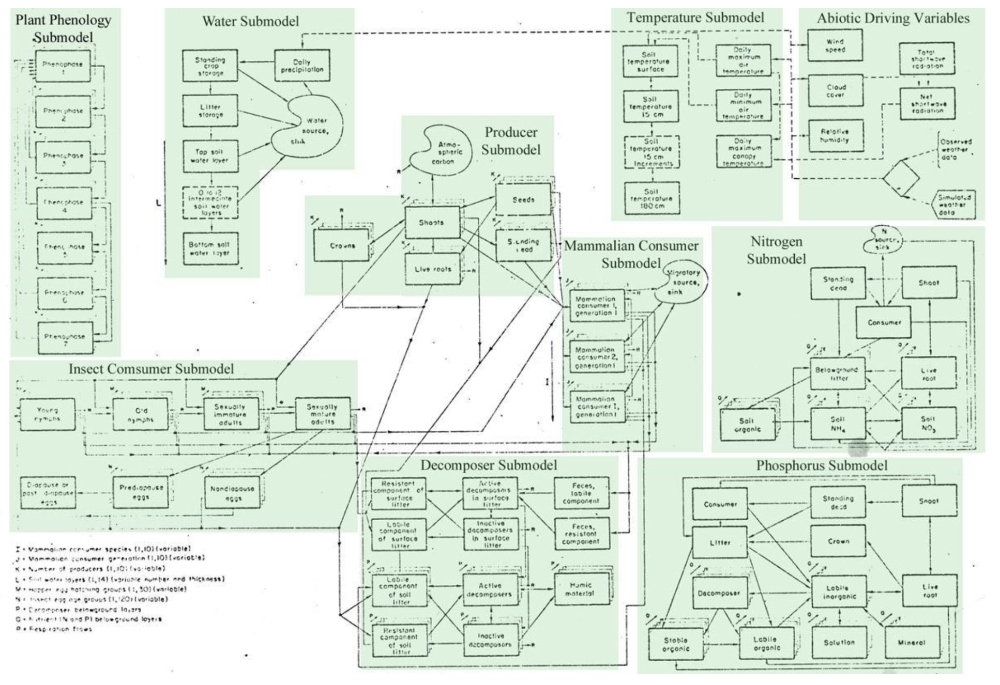
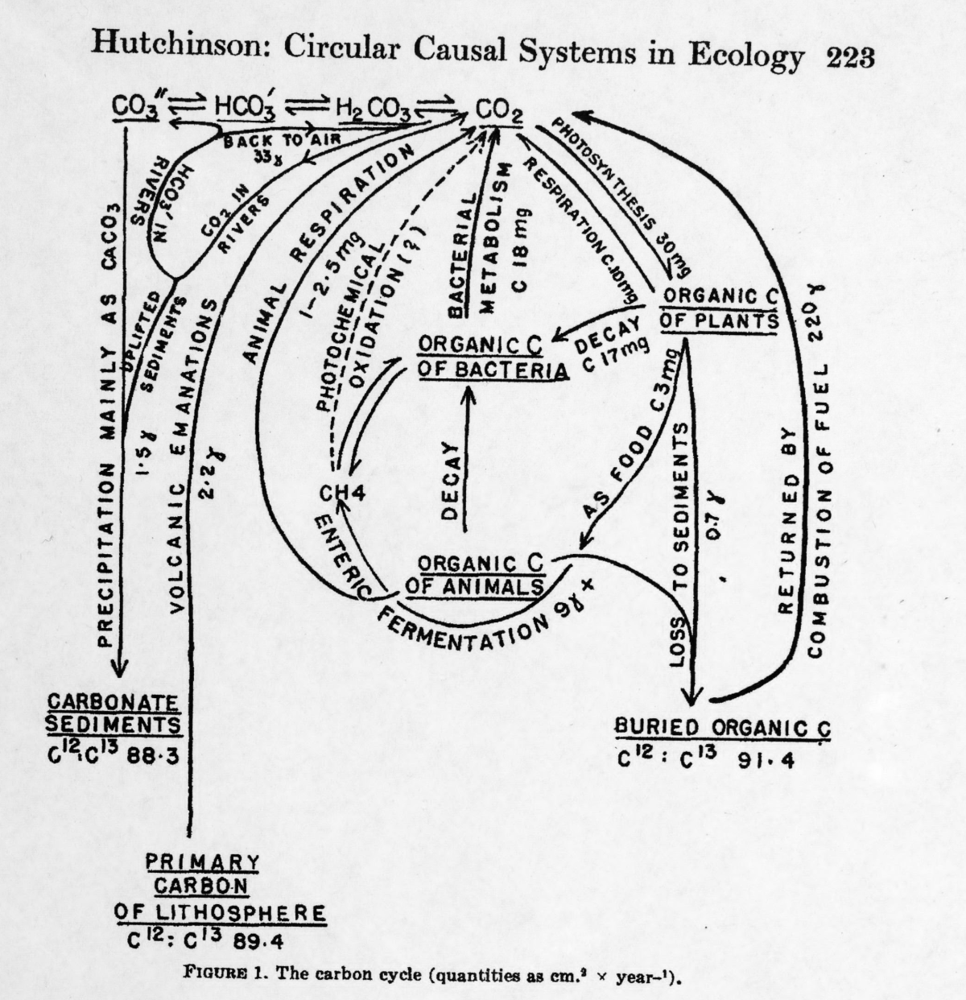

Integrate This!
An Open Handbook for Place-Based Integrative Studies and Collaborative Research in the Field
An Open Handbook for Place-Based Integrative Studies and Collaborative Research in the Field
"We are constantly impacting and changing our civilization — each other, ourselves, intimates, strangers. And we are working to transform a world that is, by its very nature, in a constant state of change."
— adrienne maree brown, Emergent Strategy
"The water we drink, like the air we breathe, is not a part of our body but is our body. What we do to one — to the body, to the water — we do to the other."
— Natalie Diaz, The First Water is the Body
"The Earth is what we all have in common."
— Wendell Berry, The Body and the Earth
We began writing this handbook to try to formalize something we had been intuitively doing as facilitators and educators over the years, and to try to make those background practices and processes — what we have been referring to in shorthand as 'Integrative Studies' — more legible, more visible, and more pronounced. Drawing on more than fifty years of the Institute's work, we wanted to explain how and why we worked the way we did.
We start from a baseline belief that the challenges that define our moment do not fit neatly inside any single discipline. Extreme drought, heat and flooding, land degradation and biodiversity loss, are not purely ecological phenomena, nor are they purely economic, or purely political, or purely cultural. As such, they can only be addressed through a framework that treats them as related, and integrated.
We are also entering a time when the status of knowledge itself is contested. Our work is transdisciplinary because it has to be. A hydrologist can model aquifer depletion with great precision and still be unable to tell you why a farming family will not stop pumping, or what it would take for them to trust a new governance arrangement, or what gets lost when a field goes dry that cannot be recovered by any technical intervention.
This handbook is a guide to different ways of engaging with the world's complexity. Integrative studies, as practiced at the Wright-Ingraham Institute, means a commitment to following a question wherever it leads, across disciplinary lines, across the boundary between academic and community knowledge, and sometimes across the gap between analysis and action.
In our work, we have to consider that someone who farms a particular acreage of land knows something about water that a hydrologist does not, and that the hydrologist knows something the farmer cannot easily access, and that neither of them knows what an artist or a poet or landscape architect might notice. It asks us to hold those different ways of knowing in tension long enough for something genuinely new to emerge.
This requires patience with ambiguity, comfort with not-knowing, genuine curiosity about perspectives that may challenge your own, a humility around disciplines — while recognizing what they are good for — and the commitment to stay in the question rather than reaching too quickly for an answer.
In presenting this as an 'open handbook,' we are genuinely hopeful that you will treat this book as a living document. Write in it. Make edits. Cross things out that don't feel right. Let us know what you think works and what doesn't.
Dylan Gauthier
Director of Research and Publications
Wright-Ingraham Institute
"It has been said that civilization is not a collection of finished artifacts, it is the elaboration of processes." — Elizabeth Wright Ingraham, quoting John Dewey.

The Wright-Ingraham Institute (WII) is a non-profit education and research institution established in Colorado in 1970 by Elizabeth 'Liz' Wright Ingraham (1922–2013). Liz was a prolific author, a Fellow of the American Institute of Architects, a champion of women's issues, and a highly regarded innovator. She is credited with the design of approximately 150 buildings throughout the Southwestern United States and was posthumously inducted into the Colorado Women's Hall of Fame. The granddaughter of Frank Lloyd Wright, her family discouraged her from studying architecture, or having a career at all. Nonetheless, Liz excelled at her work and forged a practice that combined her passions for architecture, community, conservation, and education. She established the Institute to promote, direct, encourage, and develop educational opportunities contributing to the conservation, preservation, and responsible use of human and natural resources.

In 1973, under Liz's direction the Institute opened what would come to be known as the Richard T. Parker Advanced Center for Research at its Running Creek Field Station (RCFS) site, located on 640 acres of short-grass prairie to the northeast of Colorado Springs, in Elbert, Colorado. The Field Station allowed for sustained contact with specific ecosystems, cumulative observation over time, and the development of deep, place-based knowledge that more limited visits to a site cannot produce.
The RCFS was 'site specific' and 'place-based' before either term was widely used. The Institute's approach is still rooted in this early work, but our research agenda has changed as the challenges of drought, land use, and cultural continuity in the American Southwest have come into sharper focus.
The Field Station drew its intellectual foundations from a remarkable constellation of thinkers: John Dewey's philosophy that students learn most deeply by living and working directly within the environment of inquiry; Frank Lloyd Wright's organic design philosophy; Buckminster Fuller's work in structures and cybernetics; and Aldo Leopold's land ethic.

In more recent years, the Field Station has broadened its intellectual foundations. Engaging with the wisdom of Indigenous community partners and non-western ecological and eco-feminist traditions has deepened our understanding of the land and our relationship to it. The writing and teaching of thinkers like Paulo Freire, Max Liboiron, bell hooks, adrienne maree brown, Fred Moten and Stefano Harney, and David Graeber and David Wengrow have expanded our sense of what education can be and who it is for.
Integrative study is the deliberate practice of crossing disciplinary boundaries in the service of understanding and addressing complex problems. It is not simply multidisciplinary (assembling experts from multiple fields who then work in parallel), nor merely interdisciplinary (borrowing methods from adjacent fields to enrich one's own discipline). At its fullest, integrative study is transdisciplinary: it weaves together not only multiple academic disciplines but also experiential knowledge, community wisdom, artistic sensibility, and practical craft to create something none of the contributing traditions could produce alone.
| Mode | Description |
|---|---|
| Multidisciplinary | Multiple disciplines address the same problem side by side, each in their own lane. |
| Interdisciplinary | Disciplines begin to borrow from and inform one another, blurring boundaries. |
| Transdisciplinary | Knowledge co-created across disciplines and with community partners, producing new frameworks that transcend any single field. |
| Integrative | The active weaving of all of the above, including non-academic forms of knowing, into a coherent response to a complex challenge. |
Modern universities are organized by discipline for good reasons. Disciplinary training sharpens perception and teaches what you should notice, how to measure, what counts as evidence, and how to communicate findings to others in your field.
But disciplines also have blind spots. A hydrologist trained only in hydrology may model a watershed with great precision, while missing how a community's cultural relationship to water shapes what solutions are possible. Complex adaptive challenges — drought adaptation, food system transformation, rural economic resilience — do not reside neatly inside disciplinary boundaries. They live at the intersections.

Integrative researchers must resist the temptation to simplify too quickly. A drought is not just a water shortage. It is a hydrological event, an economic disruption, a cultural wound, a political flashpoint, and an opportunity for social reinvention.
Disciplinary researchers often begin with a favored method. Integrative researchers begin with a question — often a messy and urgent real-world question — and assemble the methods that might best illuminate it. This requires methodological flexibility, intellectual humility, and genuine curiosity about approaches different from one's training.
The Wright-Ingraham Institute's research tradition leans toward applied and actionable knowledge: learning that can actually inform decisions, designs, policies, and practices. This means engaging with practitioners, policymakers, and community members not merely as research subjects but as co-designers of inquiry and co-creators of strategies.
Integrative researchers are aware of their own positionality — the ways their background, training, assumptions, and privileges shape what they see and how they interpret it. Knowing your lens lets you examine it, adjust it, and be honest with others about how it shapes your work.

| Way of Knowing | Contributes |
|---|---|
| Scientific measurement | Quantitative data, trend analysis, model-based projection (hydrology, land-use mapping) |
| Ethnographic observation | Contextual understanding of practice, meaning, and social dynamics |
| Oral history | Community memory, long-horizon observation, lived experience of ecological change |
| Systems mapping | Visualization of relationships, feedbacks, and leverage points |
| Design thinking | Creative prototyping, iterative testing, user-centered problem framing |
| Soundscape & visual documentation | Sensory and aesthetic dimensions of place; accessible communication of complex dynamics |
| Narrative co-production | Collaborative meaning-making across different knowledge traditions |
| Traditional ecological knowledge (TEK) | Long-horizon observations, place-based wisdom, relational understanding of land and water |
| Local expertise | What can someone deeply invested in a site know and share about that place? |
Integration begins with attention. Train yourself to notice what is present: not only data and evidence, but texture, mood, contradiction, absence, surprise. Keep a running list of 'notable things' that don't necessarily fall into a narrative. Anomalies are often where the most important insights hide.
Practice asking the same question at multiple scales: What is happening here, in this place, in this moment? What pattern does this instance belong to? What larger system produced this pattern? Integrative insight often emerges when a local observation suddenly illuminates a systemic dynamic, or when a systems model fails to account for something you observed on the ground.
Never rely on a single source, method, or informant. A farmer's description of how her fields have changed, corroborated by groundwater data and aerial imagery, and set in the context of water law history, becomes something far more robust and actionable than any one of those sources alone.
Writing prompts you to discover what you actually think. Even short observational entries can help clarify complex problems by situating your reflection in 'the now.' A daily writing practice is highly recommended.
You don't have to be a trained artist to make use of daily sketching. When you sketch a landscape, a water delivery system, or a conversation's web of relationships, it can help make choices about what we want to accentuate and discover connections between things. A quick sketch of an irrigation canal's path through a valley may reveal a logic that three paragraphs of description would not.
Integration is not a one-time act of synthesis; it is an ongoing cycle of inquiry, reflection, and revision. The Institute has developed a framework for navigating this cycle, which we call the Integration Cycle.

The Institute's place-based integrative studies are grounded in systems thinking, a holistic problem-solving framework that focuses on how different parts of a whole interact, influence, and depend on one another. The Southwest's water crisis is the result of multiple, interlinked causes. Drought reduced snowpack. Reduced snowpack cut surface flows. Reduced flows pushed farmers toward groundwater. Decades of heavy pumping drew down the aquifer. All of which unfolded against a backdrop of water rights law, commodity markets, population change, and cultural memory that shaped which decisions were made.
A system, in the sense developed by environmental scientist Donella Meadows, is a set of elements interconnected in such a way that they produce their own pattern of behavior over time. Three things make a system a system: its elements (the visible, tangible parts), its interconnections (the relationships and flows linking those elements), and its function or purpose.

Every system contains stocks and flows. A stock is anything that accumulates or depletes over time: water in an aquifer, trust between an institution and a community, topsoil on a farm, cultural knowledge held by elders. A flow is the rate at which a stock changes. Stocks change slowly; flows can change quickly. This is why aquifer depletion is so difficult to reverse: the stock took millennia to accumulate, and the flows that replenish it are far slower than the flows that drain it.
Amplify change in one direction. Declining aquifer levels raise pumping costs, which stress farm finances, which pressure farmers to pump more aggressively in good years to compensate, which further depletes the aquifer. Left unchecked, reinforcing loops drive systems toward collapse or explosion.
Resist change and seek equilibrium. The subdistrict model in the San Luis Valley was designed as a series of integrated balancing loops: when collective pumping exceeds targets, mandatory reductions kick in, pushing the system back toward sustainability.
Donella Meadows used the term 'bounded rationality' to describe how each actor in a system makes decisions that are individually rational given what that actor can see and know, but which produce outcomes that no one intended and everyone regrets. A farmer who pumps water to protect her livelihood is not being irrational. A water board that allocates according to legal seniority is not being irrational. But the aggregate result of all these locally rational decisions is aquifer depletion that threatens the entire system.
One of Meadows' most important contributions was her analysis of leverage points: places within a system where a small shift can produce large changes in behavior. Counterintuitively, the most obvious interventions — changing the numbers — are at the bottom of her list. They change outputs without changing the system's underlying structure.
The most powerful leverage points involve the mindset or paradigm out of which the system arises, the goals of the system, and the rules that govern feedback loops. In the San Luis Valley, shifting from a paradigm of water as privately owned commodity to water as communal trust held across generations would be a high-leverage intervention.
A causal loop diagram (CLD) is the core tool of systems mapping. It makes feedback structure visible. To build one in the field:

Place-based research is research conducted in direct, embodied contact with the places, people, and processes under study. In the San Luis Valley context, field-based research means spending time at farms and ranchlands, attending acequia workdays and water board meetings, walking canal headgates and dry creek beds, sitting with elders and with engineers, and tracing the flow of water through both infrastructure and community life.
Collaboration is crucial to integrative study. No single researcher can hold the full range of knowledge, perspective, and skill that complex problems demand. Effective collaborative research requires a framework that considers and explicitly negotiates roles, assumptions, and working styles. It requires regular structured check-ins, a genuine willingness to be changed by what your collaborators contribute, and shared norms for managing disagreement productively.
In our programs, we engage with vibrant and diverse communities who are our knowledge partners, our hosts, and our collaborators. Effective community-partnered research requires prior agreements about how findings will be shared; transparency about the purposes and limitations of your research; genuine reciprocity — asking how your work can be useful to partners; patience with the pace of relationship-building; and cultural humility.
Semi-structured interviews with farmers, water managers, community organizers, and elders provide contextual depth that no dataset can supply. Oral history methods allow you to understand how current conditions emerged from past decisions and events.
Participatory mapping engages community members in the creation of spatial knowledge: maps of water sources, historical land uses, areas of flooding or desiccation, culturally significant sites, or areas of concern. These maps often reveal spatial dimensions of drought adaptation that technical surveys miss.
A transect walk is a systematic journey across a landscape, typically along a line that crosses multiple ecological or land-use zones. In the San Luis Valley, transect walks might traverse a gradient from high-altitude snowpack zones through mountain meadows, into irrigated agricultural land, and across dry basin floor, tracking how water presence or absence shapes ecology and human use.
The Institute's research agenda recognizes narrative, artmaking, and listening as essential research tools — not supplements to 'real' research but methods in their own right. Deep Mapping means attending to the aesthetic, emotional, and narrative dimensions of the landscape alongside the technical and social. This might involve soundscape recording in a dry creek bed; sketch-mapping a farmer's perception of where water has retreated over her lifetime; collaborative timeline-making with a community group; or documenting the visual textures of soil, irrigation infrastructure, and cropping patterns.
Once a research team has developed a grounded understanding of the system, scenario development combines climate projections, stakeholder input, and systems analysis into concrete, communicable visions of possible futures. Design prototyping translates those visions into material, spatial, or institutional proposals that can be evaluated by community partners.
Academic and institutional research has a long history in Indigenous, rural, and marginalized communities, and much of that history is not a good one. Researchers arrive with questionnaires, recording equipment, and collection bags; take what they need in the form of stories, seeds, maps, songs, ecological knowledge, and water data; and leave. The communities are thanked in footnotes. The knowledge appears in journal articles and policy reports that the communities never see, in language they were not consulted about, drawing conclusions they were not asked to review.
This pattern has a name: extractive research. Its effects accumulate. Some of that research has caused harm. There is a risk that some research may produce findings that are used against the communities who provided the underlying knowledge.
Non-extractive research is not simply research that is polite, culturally sensitive, or well-intentioned. It is research structured so that the communities involved have genuine agency over the process and its outcomes.
Genuine informed consent requires that participants understand not just what you are asking, but how you intend to use what they share, who else will have access to it, what happens to it after the workshop ends, and what recourse they have if they later want something removed or changed. Many Indigenous nations and pueblos operate under principles of collective consent: the community, as a governing body, must agree to a research relationship before individual community members are approached.
Consent is not a one-time event. People have the right to withdraw, limit, or amend what they have shared at any point in the process. Reciprocity in the field means contributing something of genuine value — not just gratitude.
Indigenous data sovereignty is the right of Indigenous peoples to govern the collection, ownership, and application of data about their communities, territories, peoples, and cultures. Data collected in or about Indigenous communities does not automatically belong to the researcher who collected it. Any data storage, analysis, or dissemination plan must address these questions explicitly, with the community's input, before the research begins.
Some knowledge contained in field sites is not yours to carry out. This is especially true in Indigenous communities, where certain ecological, ceremonial, and territorial knowledge is held collectively and governed by protocols about who can know it, how it can be shared, and with whom. The fact that someone tells you something does not mean you have the right to record it, write it down, analyze it, or share it outside the conversation.
Design for adaptation draws on traditions of adaptive management, participatory and iterative design, and resilience theory to develop responses to complex, uncertain, and changing conditions. Several principles distinguish design for adaptation from conventional planning or problem-solving.
Conventional planning often seeks an optimal solution. Adaptive design recognizes that in complex systems, conditions change faster than optimal solutions can be implemented. The goal is adaptive capacity: the ability to respond effectively to a wide range of possible futures.
A drought-resilient irrigation system that farmers cannot understand, maintain, or modify is not truly adaptive. Adaptive designs must be accessible to the people who will actually use and maintain them. This requires deep engagement with end-users during the design process, not merely at the point of delivery.
Adaptive design practitioners expect that first implementations will be imperfect. Monitoring, evaluation, and iteration are built into the process from the beginning. Communities that can identify what is not working and adjust accordingly are more resilient than those that implement 'final' solutions.
Farmers, acequia managers, and Indigenous water stewards in the San Luis Valley and Northern New Mexico possess millennia of cumulative knowledge about what works in a specific landscape. This knowledge is not anecdote; it is data, tested over time by the most rigorous of evaluators: survival. Integrating this knowledge with technical analysis is not merely culturally sensitive; it is scientifically sound.
Designing for adaptation means approaching these landscapes as evolving, living systems. It means building capacity for change rather than optimizing for a single fixed outcome. It means paying close attention to who bears the costs of adaptation and who captures its benefits — questions of justice as much as ecology.
The following terms appear throughout this handbook or are relevant to the integrative research practice it describes. The terms collected here are the broad, conceptual, disciplinary, and methodological vocabulary of the field of integrative studies.
An approach to natural resource management and planning that treats decisions as experiments, builds in monitoring and evaluation from the start, and uses what is learned to adjust strategies over time. Distinguished from conventional planning by its expectation that first attempts will be imperfect and its deliberate design of feedback loops between action and learning. In the Field Workshop context, adaptive management is both a method and an orientation: the willingness to change course in response to what the field actually shows you.
A visual tool for making the feedback structure of a system visible. Variables are represented as nodes; arrows between them are labeled '+' (the two variables move in the same direction) or '−' (they move in opposite directions). Closed chains of arrows form feedback loops, which are identified as reinforcing (R) or balancing (B) depending on the count of '−' signs. A CLD is not a truth claim about a system; it is a collaborative thinking tool, a map for conversation, and a way of surfacing assumptions that often remain invisible in ordinary analysis.
A mode of inquiry in which research is designed and conducted not by a single expert acting on a community or landscape, but by multiple actors — including community members, practitioners, and researchers from different disciplines — who share roles in framing questions, collecting and interpreting evidence, and deciding how findings are used. Collaborative research requires explicit negotiation of roles, assumptions, and credit. It is slower than conventional expert-led research and more likely to produce findings that are actually usable by the communities involved.
The forms of understanding held collectively by a community, developed through long habitation in a place, shared practice, oral tradition, and intergenerational experience. Community knowledge is not inferior to scientific or technical knowledge; it operates at different scales and through different methods, and often captures dynamics — the feel of a season, the behavior of a canal over decades, the social meaning of a water shortage — that technical instruments cannot easily measure. Integrative research treats community knowledge as a legitimate epistemic resource, not merely as 'context' around the 'real' data.
A mode of research that integrates knowledge from the life sciences, physical sciences, social sciences, engineering, and the humanities to address complex problems. Distinguished from simple multidisciplinarity by its aspiration to produce genuinely new conceptual frameworks, not just to arrange existing disciplines side by side. The Wright-Ingraham Institute's research practice is broadly aligned with convergence science, particularly in its emphasis on bringing together ecological, hydrological, social, cultural, and design knowledge around questions that none of those fields can answer alone.
A creative and narrative research method that attends to the aesthetic, emotional, historical, and sensory dimensions of a landscape alongside technical and social data. Deep maps aim to produce a richer understanding of place than datasets alone can provide, drawing on soundscape recording, sketch mapping, oral history, community-based timeline-making, and visual documentation. The term originates in literary geography and has been taken up by artists, geographers, and environmental humanists working at the intersection of place, memory, and ecology.
An organized field of study defined by its characteristic questions, methods, standards of evidence, and community of practitioners. Disciplines are not natural features of knowledge; they are historically contingent social institutions, built up over time as universities, journals, grant agencies, and professional associations sorted inquiry into manageable categories. This history matters for integrative work because it means disciplinary boundaries are negotiable — they have been drawn and redrawn before — and that what counts as a legitimate question, method, or finding is always shaped by the norms of a particular community, not just by the nature of reality.
The scientific study of the relationships between organisms and their environments, including interactions among species and between living organisms and the physical world. In the context of the Field Workshop, ecology provides analytical tools for understanding how landscapes function as systems — how energy and nutrients flow, how disturbances propagate, how resilience is built or lost. Ecological thinking is one of the core disciplinary lenses the workshop draws on, alongside hydrology, social science, economics, and the arts.
The branch of philosophy concerned with the nature, sources, and limits of knowledge. In integrative research practice, epistemological questions are not abstract: they arise every time you ask whose knowledge counts, how different ways of knowing relate to each other, and what it means to 'know' something about a landscape, a community, or a system. The commitment to integrative studies implies a pluralist epistemology — the view that no single method or tradition has a monopoly on valid knowledge, and that understanding complex problems requires drawing on multiple epistemic traditions simultaneously.
A qualitative research method developed in social and cultural anthropology, involving sustained, close observation of and participation in the life of a community or social setting. Ethnographic methods include participant observation, semi-structured interviewing, documentary analysis, and the careful recording of field notes. In the Field Workshop context, ethnographic approaches help researchers understand how institutions function in practice, how cultural values shape resource use decisions, and how communities make sense of drought and adaptation in their own terms rather than in the terms imported by outside researchers.
In systems thinking, a closed chain of cause-and-effect relationships in which a change in one variable propagates through the system and eventually returns to affect that same variable. Feedback loops are the primary mechanism through which systems exhibit self-reinforcing or self-correcting behavior over time. A reinforcing (positive) loop amplifies change in one direction; a balancing (negative) loop resists change and seeks equilibrium. Understanding the feedback structure of a system is essential to identifying where interventions are likely to have lasting effect.
The science of water — its properties, distribution, and movement through the atmosphere, across the land surface, and through the subsurface. In the Southwest context, hydrological understanding is foundational: it describes how snowpack accumulates and melts, how water moves from mountains through stream systems and into aquifers, how aquifers recharge and deplete, and how land use choices ripple through the water cycle. Hydrological data — streamflow records, aquifer levels, evapotranspiration estimates — form the quantitative backbone of the San Luis Valley's water management challenges.
The body of knowledge, practices, and beliefs developed by Indigenous peoples through long-term interaction with their specific environments, passed down through generations via oral tradition, practice, and ceremony. Sometimes called Traditional Ecological Knowledge (TEK) when referring specifically to knowledge about the natural world. Indigenous knowledge is not a single thing: it varies enormously across nations, communities, and landscapes. In research contexts, Indigenous knowledge must be engaged with on its own terms and according to the protocols of the community that holds it — not extracted, decontextualized, or treated as supplementary data for scientific studies conducted without community consent.
WII's six-phase framework for integrative research practice: Immerse, Diverge, Connect, Synthesize, Test, Reflect. The cycle is not a linear protocol but an iterative discipline — a structured way of moving between open observation and provisional synthesis, between individual inquiry and collective sense-making, and between research and action. Researchers are expected to move through the cycle multiple times at different scales and timescales, and to treat each completed cycle as the beginning of the next rather than the end of the inquiry.
The deliberate practice of crossing disciplinary boundaries in the service of understanding and addressing complex problems. Integrative studies is distinguished from multidisciplinary work (disciplines working in parallel) and interdisciplinary work (disciplines borrowing from each other) by its aspiration to produce genuinely new understanding that no single discipline could generate alone — including by weaving in community wisdom, artistic practice, experiential knowledge, and practical craft alongside academic expertise. At its fullest, integrative studies is transdisciplinary: it does not just combine existing disciplines but creates new conceptual frameworks adequate to the problems it addresses.
A concept developed by ecologist and conservationist Aldo Leopold in A Sand County Almanac (1949), proposing that the moral community should be extended beyond humans to include soils, waters, plants, and animals — 'the land' as an integrated whole. The land ethic holds that 'a thing is right when it tends to preserve the integrity, stability, and beauty of the biotic community. It is wrong when it tends otherwise.' Leopold's framework has been influential in conservation biology, environmental ethics, and place-based education, and informs the Field Station's foundational emphasis on learning to 'read' living systems as an act of stewardship.
A place within a system where a small shift can produce large changes in overall behavior. Donella Meadows identified twelve categories of leverage points, ranging from least to most powerful: changing numbers (parameters) at the bottom; changing feedback loop strengths, information flows, and rules in the middle; and changing the goals, self-organization capacity, and paradigm of the system at the top. Counterintuitively, the most obvious interventions — adjusting the numbers — are typically the weakest. The most powerful interventions work at the level of purpose and mindset.
Three related but distinct modes of working across academic fields. Multidisciplinary work assembles experts from multiple fields who address the same problem side by side, each in their own lane. Interdisciplinary work involves genuine borrowing and integration across fields, with researchers adopting concepts and methods from adjacent disciplines. Transdisciplinary work goes further: knowledge is co-created across disciplinary and community boundaries, producing new frameworks that transcend any single field. WII's approach to integrative studies aims for the transdisciplinary end of this spectrum, while recognizing that most real projects involve elements of all three.
A method of historical and qualitative research that collects and preserves spoken memories, narratives, and interpretations of the past from individuals and communities. Oral history is especially important in communities whose histories have not been well documented in official archives — including many rural, Indigenous, and Hispano communities in the Southwest. In the Field Workshop context, oral history interviews are a primary tool for understanding how current landscape conditions and water governance arrangements emerged from specific historical decisions, and for capturing knowledge — about what the land used to look like, how water once behaved, what was tried and why it failed — that does not appear in any dataset.
In Thomas Kuhn's influential account, a paradigm is the set of assumptions, values, exemplary problems, and methods that define normal practice within a scientific community at a given time. More broadly, a paradigm is the taken-for-granted worldview within which problems are framed, evidence is interpreted, and solutions are designed. In systems thinking (following Meadows), paradigms are the most powerful leverage points in a system: they shape the goals institutions pursue, the rules they enforce, and the metrics they track. Changing a paradigm — for instance, from water as private property to water as communal trust — changes everything downstream.
An approach to inquiry in which the people most directly affected by a problem are involved as active participants in the research process — not merely as subjects or informants, but as co-designers, co-interpreters, and co-owners of findings. Participatory research methods include community-based participatory research (CBPR), participatory action research (PAR), and participatory mapping. The approach is premised on the recognition that communities hold knowledge that outside researchers cannot access through conventional methods, and that research is more likely to produce usable outcomes when those affected by a problem are involved in defining it.
Research that takes a specific place — with its particular ecology, history, social relations, and cultural meanings — as the primary unit of inquiry rather than an abstract variable or case study. Place-based research is grounded in direct, embodied contact with the landscape and community under study. It is distinguished by attention to context, flexibility in response to what the field reveals, and the recognition that the same 'problem' looks very different depending on where you are standing and whose eyes you are seeing through.
The ways in which a researcher's social location — their race, class, gender, disciplinary training, institutional affiliation, prior knowledge, and lived experience — shapes what they notice, what they take as evidence, how they interpret what they observe, and whose knowledge they are inclined to take seriously. Acknowledging positionality is not a confession of bias that disqualifies a researcher; it is an intellectual resource that makes research more honest and more rigorous. Knowing your lens lets you examine it, name its limits, adjust for them where possible, and be transparent with collaborators and readers about how it shapes your work.
The practice of systematically examining and accounting for the ways that a researcher's own assumptions, values, and position shape the research process and its findings. Reflexivity goes beyond simple acknowledgment of positionality: it is an ongoing practice of scrutinizing one's choices — about what questions to ask, whose voices to seek out, which evidence to trust, and how to frame findings — in order to produce more honest and rigorous knowledge. In integrative research, reflexivity also extends to the team level: collaborative groups benefit from regular examination of whose perspectives are shaping the group's collective framing.
The capacity of a system — ecological, social, or socio-ecological — to absorb disturbance, reorganize under pressure, and continue to function in much the same way. Resilience is distinct from stability (resistance to change) and from robustness (the ability to function under a specific range of conditions): a resilient system can absorb shocks and adapt, whereas a merely stable system may be rigid and brittle. In the context of drought adaptation, resilience thinking draws attention to the importance of diversity (in crops, incomes, governance arrangements), redundancy (multiple pathways to the same function), and the ability to reorganize when current arrangements no longer work.
A concept from resilience science and institutional economics describing a system in which human social structures and ecological processes are so deeply intertwined that they cannot be understood separately. The San Luis Valley is a social-ecological system: its aquifer levels are shaped by water rights law; its cropping patterns are shaped by commodity markets and cultural identity; its dust-on-snow dynamics are shaped by land management decisions made across millions of acres. SES thinking resists the tendency to treat ecology and society as separate domains and insists that understanding either requires understanding the other.
The scientific study of soil as a natural resource — its formation, classification, mapping, physical, chemical, biological, and mineralogical properties, and its role in supporting plant life, storing water, cycling nutrients, and sequestering carbon. In the Southwest context, soil science is directly relevant to questions of dust generation (disturbed, unprotected soils are the source of the dust that darkens mountain snowpack), revegetation (soil health determines whether plant cover can be re-established on retired irrigated land), and long-term agricultural viability. Healthy soils are a slow-building stock; their degradation is a reinforcing loop that is difficult to reverse.
An approach to analysis and problem-solving that focuses on how the parts of a system interact to produce its behavior over time, rather than on the properties of parts in isolation. Systems thinking draws attention to feedback loops, delays, stocks and flows, nonlinear responses, and the gap between local rationality and system-level outcomes. It was developed in the mid-twentieth century by engineers and social scientists including Jay Forrester and Norbert Wiener, and applied to environmental and social problems most accessibly by Donella Meadows in Thinking in Systems (2008). Systems thinking is not a replacement for disciplinary expertise; it is a framework for integrating diverse forms of expertise and for understanding why complex problems resist simple solutions.
The cumulative body of knowledge, practices, and beliefs about the relationships between living beings — including humans — and their environment, developed by Indigenous and local peoples over long periods of time through direct contact with the environment, and passed down through generations by cultural transmission. TEK is not static: it is dynamic, adaptive, and place-specific. In research contexts, TEK must be engaged with according to Indigenous data sovereignty principles — with community consent, with recognition of community ownership, and with genuine reciprocity about how findings are used and shared.
See: Multidisciplinary / Interdisciplinary / Transdisciplinary.
A term used in integrative and decolonial scholarship to acknowledge that knowledge is produced through many different methods, traditions, and social locations — not only through the methods of Western academic science. Ways of knowing include scientific measurement, ethnographic observation, oral history, traditional ecological knowledge, artistic and sensory practice, narrative, design, and community-based inquiry. Recognizing multiple ways of knowing does not mean treating all claims as equally valid regardless of context; it means being genuinely curious about what each tradition can perceive, what it cannot, and how different ways of knowing can be brought into productive dialogue with each other.
Boix Mansilla, Veronica. "Assessing Expert Interdisciplinary Work at the Frontier." Research Evaluation 15.1 (2006): 17–29.
Boix Mansilla, Veronica, and Elizabeth Duraising. "Targeted Assessment of Students' Interdisciplinary Work." The Journal of Higher Education 78.2 (2007): 215–237.
Egerton, F.N. (2017), History of Ecological Sciences, Part 59: Niches, Biomes, Ecosystems, and Systems. Bull Ecol Soc Am, 98: 298-337. https://doi.org/10.1002/bes2.1337
Funtowicz, Silvio O., and Jerome R. Ravetz. "Science for the Post-Normal Age." Futures 25.7 (1993): 739–755.
Gibbons, Michael, et al. The New Production of Knowledge. Sage, 1994.
Haraway, Donna. "Situated Knowledges." Feminist Studies 14.3 (1988): 575–599.
Hutchinson, G. E. 1948. Circular causal systems in ecology. New York Academy of Sciences Annals 50: 221–246.
Klein, Julie Thompson. Interdisciplinarity: History, Theory, and Practice. Wayne State University Press, 1990.
Liboiron, Max. "Methodologies: How to Read a Landscape." Discard Studies, 17 June 2013.
Meadows, Donella H. Thinking in Systems: A Primer. Chelsea Green Publishing, 2008.
Meadows, Donella H. "Leverage Points: Places to Intervene in a System." Donella Meadows Institute, 1999.
Nicolescu, Basarab. Manifesto of Transdisciplinarity. SUNY Press, 2002.
Rafols, I., Porter, A.L. and Leydesdorff, L. "Science overlay maps." J. Am. Soc. Inf. Sci., 61 (2010): 1871–1887.
Repko, Allen F., and Rick Szostak. Interdisciplinary Research: Process and Theory. 3rd ed. Sage, 2016.
Scott, James C. Seeing Like a State. Yale University Press, 1998.
Senge, Peter M. The Fifth Discipline. Doubleday, 1990.
Weed, Brad. "Big Science Meets Big Ecology under the Big Sky: How One Man Launched a Quantitative Approach to Systems Ecology in Just a Few Short Years." Interplace, 17 July 2021, interplace.io/p/big-science-meets-big-ecology-under.
Sterman, John D. Business Dynamics. Irwin/McGraw-Hill, 2000.